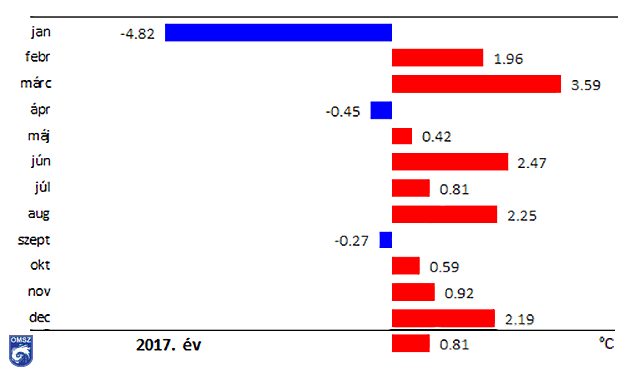
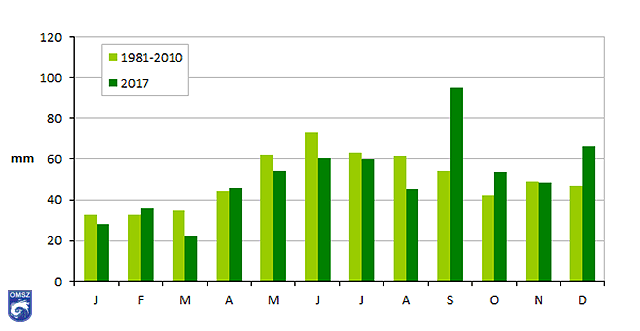

2017. IDŐJÁRÁS
A Földön a 2017-es évet hőmérsékleti szempontból jelenleg a három legmelegebb év között tartjuk számon. A globálisan rekord meleg 2016 után, az elmúlt év 2015-tel megegyező értékkel került a 3. helyre. A 2017-es év hazánk területén is összességében az átlagosnál melegebb volt.
Az évi középhőmérséklet szinte teljesen megegyezett 2016. évivel, azonban elmaradt az eddigi legmelegebb 2014-es évtől, melyet az 1. ábra szemléltet. Homogenizált, interpolált adatok alapján 2017-ben az országos középhőmérséklet mintegy 0,8 °C-kal haladta meg az 1981-2010-es sokévi átlagot és 11,14 °C-os középhőmérsékleti értékkel 1901 óta a tizenegyedik legmelegebbnek bizonyult. Az országos évi középhőmérséklet adatokhoz illesztett lineáris trend (1. ábra) egyértelmű emelkedést mutat. Az országos évi középhőmérséklet változása az elmúlt 117 évben +1,15 °C-nak, az elmúlt 30 évre vonatkozóan pedig +1,22 °C-nak adódik.
HŐMÉRSÉKLET
|  |
Az országos havi középhőmérséklet eltérése a sokévi (1981-2010-es) átlagtól 2017-ben |
- Januári középhőmérséklet (-4,8 °C) jelentősen elmaradt az 1981-2010-es sokévi átlagtól
- Ezt követően április és szeptember kivételével mindegyik hónap melegebb volt a megszokottnál.
- Márciusban a havi átlag 3,6 °C kal magasabbnak adódott a normálnál.
- Június +2,5 °C
- Augusztus +2,2 °C
- December +2,2 °C
- 2017-hez köthető az 5. legmelegebb nyár
- Valamint a 12. legmelegebb tavasz
CSAPADÉK
|  |
Havi csapadékösszegek 2017-ben és az 1981-2010-es átlagértékek (mm) |
- Március
2017 márciusa a szokásosnál szárazabb volt, az országos átlag 22,2 mm, ami az 1981-2010-es sokévi átlag csupán 64 %-a. A csapadék leginkább a középső országrészre koncentrálódott, 40-50 mm feletti értékeket eredményezve. Gerecse-tetőn regisztráltuk a legnagyobb havi összeget, 64 mm-rel. Az ország északkeleti és nyugati részein jelentkezett a legkisebb csapadékösszeg, az Őrség egyes részein 5 mm alatti értéket mértünk.
- Szeptember
A hónap meglehetősen csapadékosnak bizonyult, homogenizált adatok szerint az országos havi csapadékösszeg meghaladta a 95 mm-t. A legcsapadékosabb területek a Dunántúl nyugati részén és a Duna-Tisza közén voltak, egyes helyeken a havi összeg elérte a 200 mm-t is. Ugyanakkor a Tiszántúlon és a Maros mentén mindössze 40 mm hullott.
 Forrás: www.met.hu
Forrás: www.met.hu
HŐINGÁS KISZÁMÍTÁSA